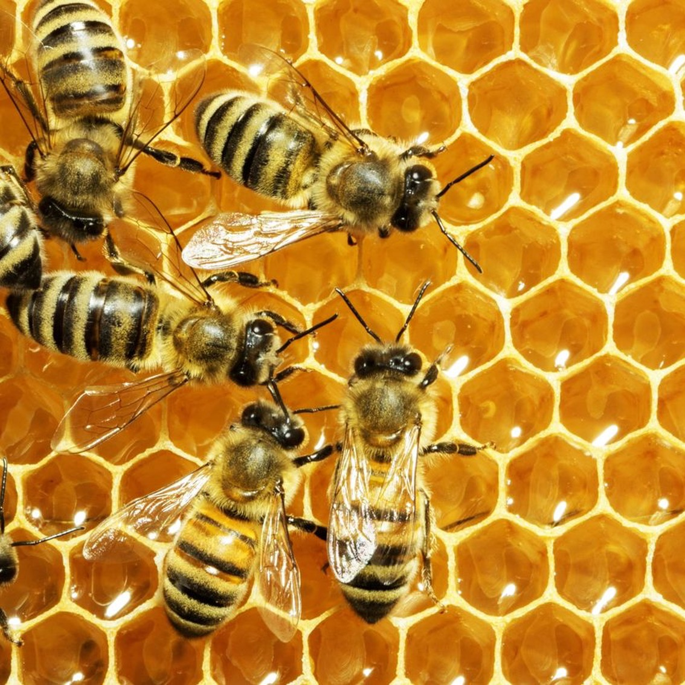

Award July 2026
Léa Droesbeke-Fuente awarded a Hamilton Syringe Grant

Léa Droesbeke-Fuente, first-year PhD student in the lab, has been awarded a €1,000 Hamilton Syringe Grant for her project investigating the neural basis of emotional states in honey bees. Congratulations, Léa!